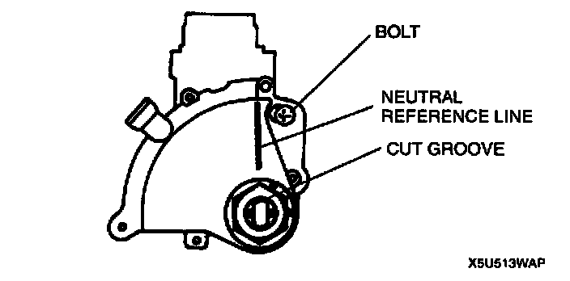

Transmission Position Sensor/Switch: Adjustments
TRANSMISSION RANGE SWITCH ADJUSTMENT1. Disconnect the negative battery cable.
2. Remove the selector rod from manual shaft lever.
3. Rotate the manual shaft to the N position.
4. Loosen the transmission range switch mounting bolt.

5. Align the cut groove in the switch with the neutral reference line.
6. Tighten the transmission range switch mounting bolt.
Tightening torque 4.0 - 6.8 Nm (40 - 70 kgf-cm, 35 - 60 inch lbs.)
7. Install selector rod to the manual shaft lever.
8. Connect the negative battery cable.
9. Inspect the operation of the transmission range switch.